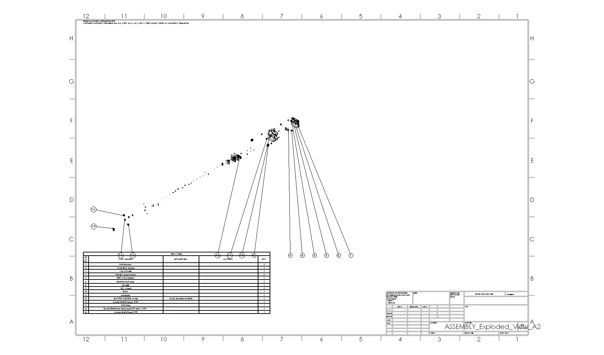
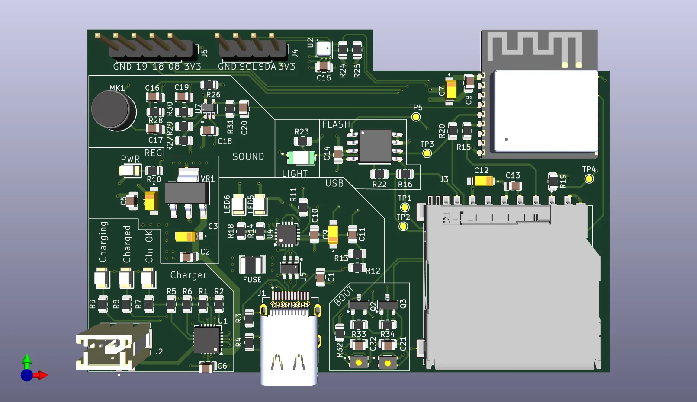
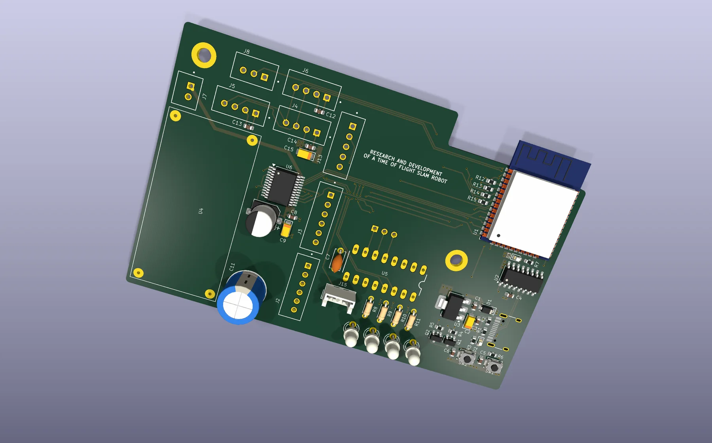
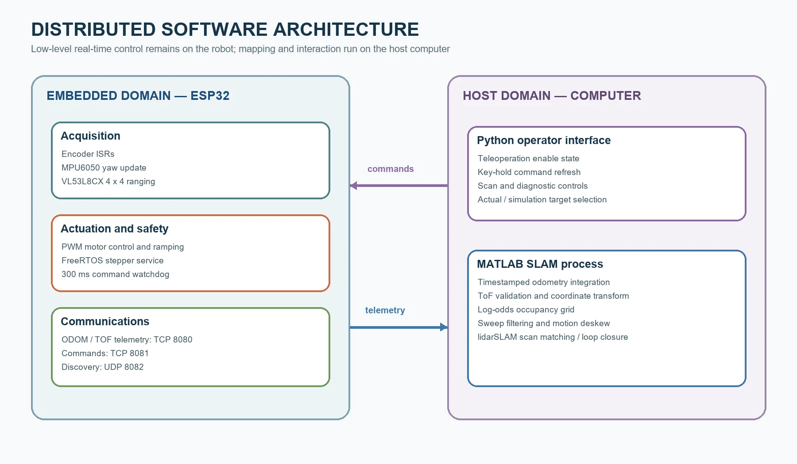
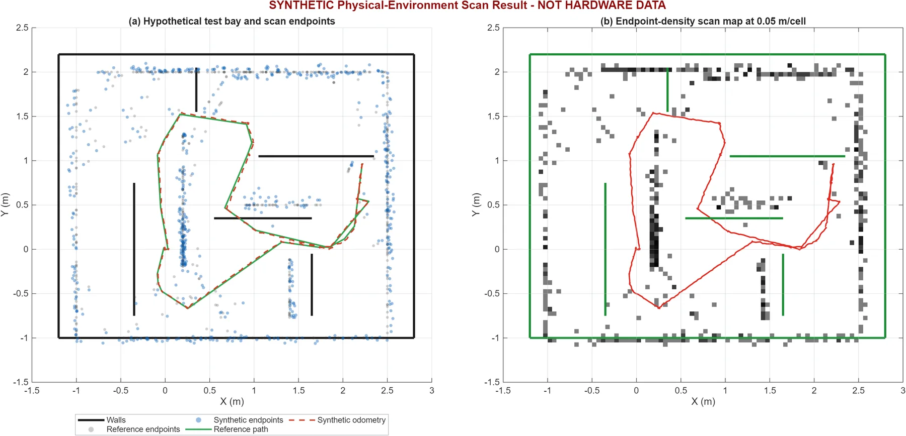
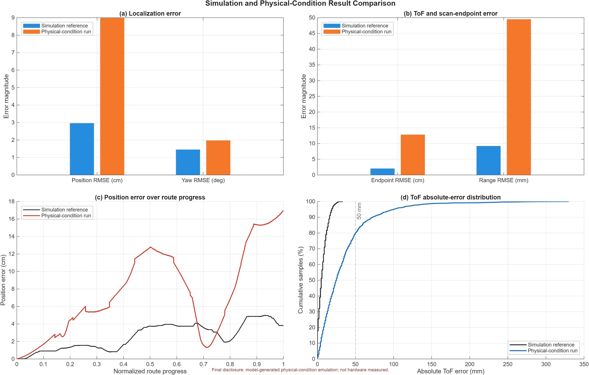

Sensing
A VL53L8CX ToF sensor on a stepper-driven scanner measures surrounding geometry. Wheel encoders and an IMU provide motion information.
Robotics / Final year project
A compact indoor mapping platform combining time-of-flight sensing, wheel odometry, embedded motion control, MATLAB analysis and a custom four-layer PCB.

Develop a cost-conscious mobile robot that can estimate its motion, scan indoor geometry and create a usable map without relying on a conventional 2D LiDAR.
The project required the mechanical platform, sensor stack, embedded firmware, data pipeline and validation approach to work as one system. I separated these into testable subsystems before integrating them.
A VL53L8CX ToF sensor on a stepper-driven scanner measures surrounding geometry. Wheel encoders and an IMU provide motion information.
The ESP32 coordinates acquisition, motion control, safety states and communication with the host-side analysis tools.
MATLAB and Python tools support pose analysis, mapping, visualization and repeatable test workflows.
A custom four-layer PCB organizes power, sensor, actuator and communication interfaces for the robot.
I developed the robot as a complete mechatronic system, moving between chassis design, electronics, firmware and mapping analysis.
The four-layer robot board grew from earlier tutorial-based PCB practice, then expanded into a system-specific design with more demanding power, sensing and interface requirements.


Project evidence



